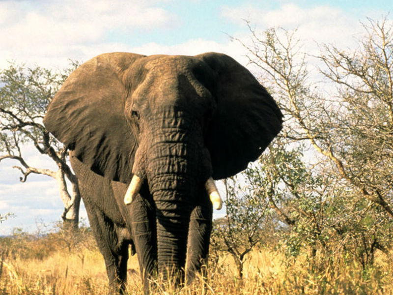

Voi
Tên tiếng anh: Elephant

Họ Voi (danh pháp khoa học: Elephantidae) là một họ các động vật da dày, và là họ duy nhất còn tồn tại thuộc về bộ có vòi (hay bộ mũi dài, danh pháp khoa học: Proboscidea). Họ Voi hiện có ba loài còn tồn tại là: voi đồng cỏ châu Phi và voi rừng châu Phi (có thể được hiểu chung là voi châu Phi) và voi châu Á (ngày trước được hiểu như là voi Ấn Độ). Chúng phân bố ở châu Phi, Ấn Độ và vùng Tây Nam Á. Có một loài nữa là voi ma mút (là loài động vật trên cạn lớn nhất thế giới) cũng được biết đến nhưng đã bị tuyệt chủng ở thời kỳ băng hà cách đây chừng 10.000 năm.
Voi là động vật có vú lớn nhất còn sinh sống trên mặt đất ngày nay. Con voi nặng nhất được công nhận là con voi bị bắn hạ tại Angola năm 1974. Nó là một con voi đực, nặng 12.000 kg (26.400 pounds). Các loài voi nhỏ nhất, với kích thước chỉ cỡ con bê hay con lợn lớn, là các loài voi tiền sử đã sinh sống trên đảo Crete cho tới khoảng năm 5000 TCN, và có thể là tới những năm khoảng 3000 TCN. Các hộp sọ còn sót lại, nằm rải rác của chúng, với lỗ vòi lớn duy nhất đặc trưng ở phía trước, có lẽ là cơ sở của niềm tin về sự tồn tại của những người khổng lồ một mắt (cyclops) trong Odyssey của Homer.
Các nghiên cứu gần đây về các di tích động vật tại miền trung Trung Quốc cho thấy người tiền sử ăn thịt voi. Trong lịch sử, việc săn voi là phổ biến để bắt và sử dụng voi ở châu Á, riêng ở châu Phi việc săn bắt voi lấy ngà được thực hiện bởi những tên thực dân phương Tây và ngà voi là mặt hàng buôn bán nhộn nhịp. Voi hiện nay là động vật được bảo vệ, và việc nuôi nhốt như là động vật cảnh bị cấm trên toàn thế giới.